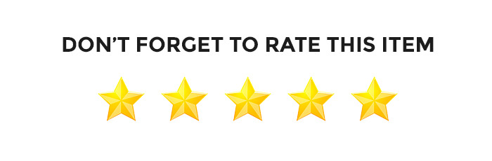
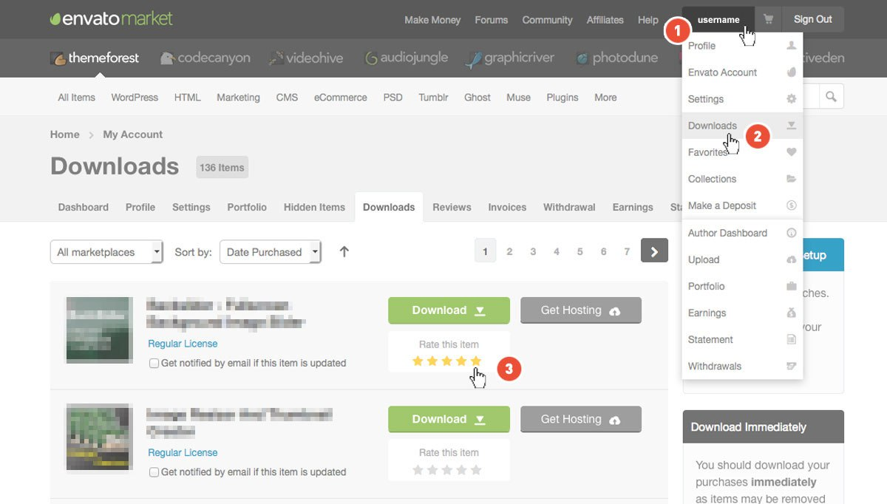
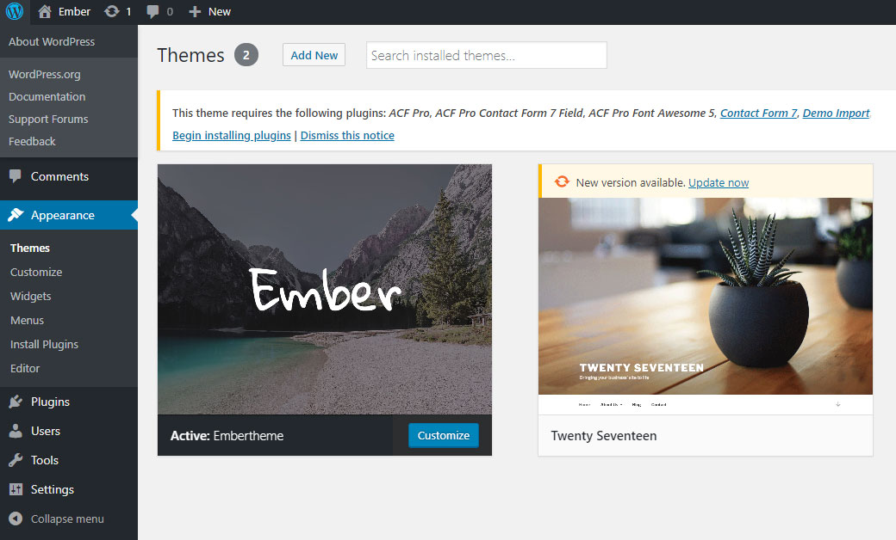
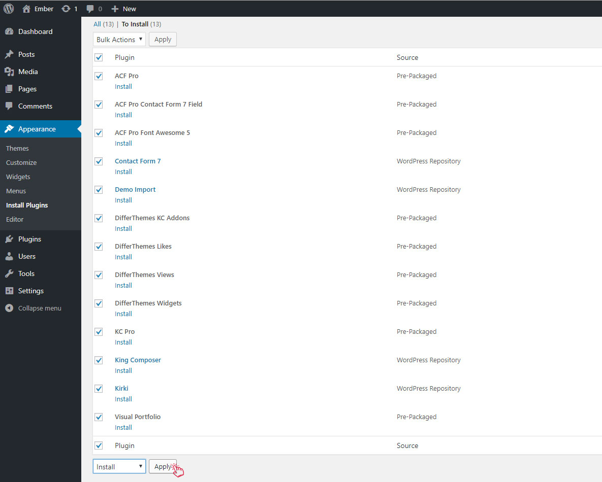
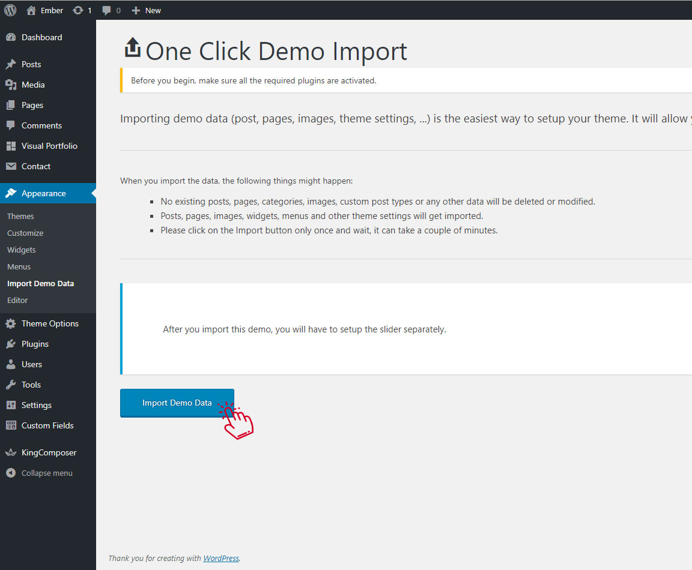
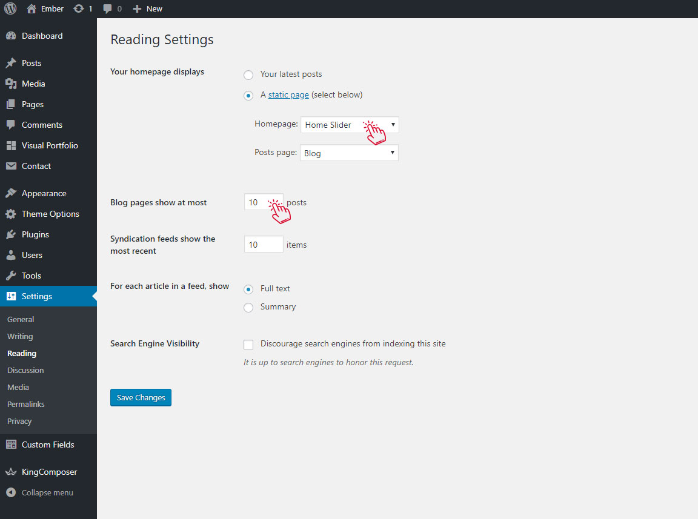
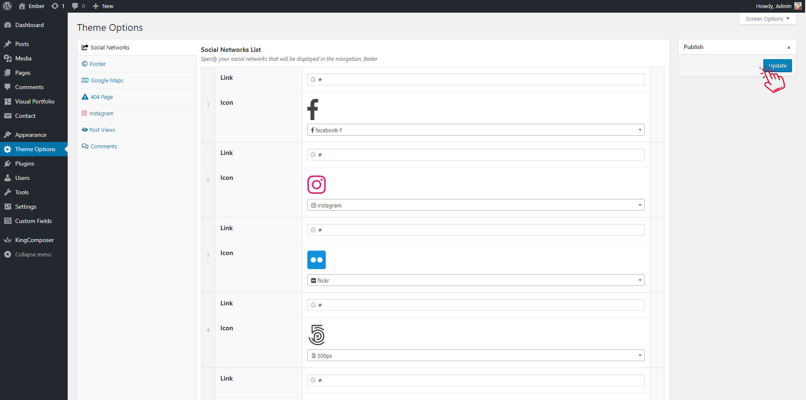
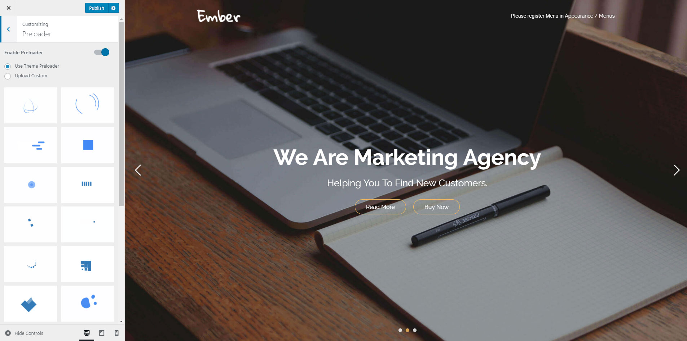
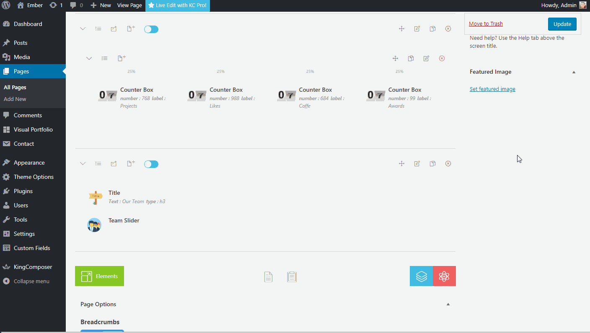
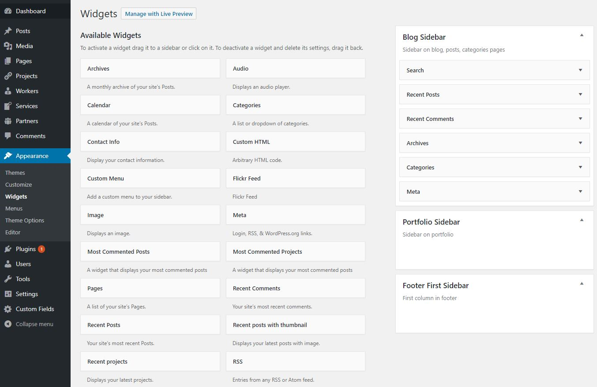

Support
Thank you very much for purchasing my template. We've put a lot of hard work into it, and we hope you love it as much as we do. As far as the documentation is concerned, we have tried to cover as much as possible to help you get your new template up and running and to help you customise it.
If you have any questions or problems that aren't answered here, please feel free to email us
We love to hear your feedback - if you find any bugs or have suggestions for improvements please get in touch. Nearly all of the time we follow your advice.
If you like our work, please rate it. If you’re about to rate it with less than 5 stars, please let us know the reason first and we will do our best to improve the theme. Thanks so much!


WordPress Information
Since WordPress is constantly being updated information about how to install WordPress may become out of date, so you always can read official guide HERE
Below are all the useful links for WordPress information:
- WordPress Codex – general info about WordPress and how to install on your server.
- Instructional Video – awesome How-To video created by Woo Themes.
- First Steps With WordPress – general information that covers a wide variety of topics.
- FAQ New To WordPress – the most popular FAQ’s regarding WordPress.
- WP101 Basix Training videos – some great videos from WPTuts on WordPress.
Theme Installation
Once you've downloaded the installation file on ThemeForest, extract it and locate a file called embertheme.zip. You can install the theme by using one of two installation methods:
WordPress upload
- Login to WordPress admin.
- Go to Admin panel > Appearance > Themes > Add New > Upload Theme.
-
Click on Choose File and select
embertheme.zip. - Click on Install Now.
- When your theme is successfully installed, click Activate to activate the newly installed theme.
FTP upload
- Using FTP client, login to the server where your WordPress website is hosted.
-
Using FTP client, navigate to the
/wp-content/themes/directory under your WordPress website's root directory. - Using FTP client, upload the Paragon directory to themes directory on remote server.
- Once uploaded, navigate to Dashboard > Appearance > Themes in the WordPress Dashboard and hit Activate below your newly uploaded theme.
When you use first or second method, please make sure that you're uploading the embertheme.zip file, not entire package you downloaded. If you upload the wrong file you will get an error stating
“Error: missing style.css stylesheet.”
Once installation is complete, your Ember theme will be ready to use. You should now see Ember theme as active.

Installing Required Plugins
When you first install the theme you'll see a popup on your dashboard from the theme asking you to install a number of plugins.

You must install and activate all plugins
Demo Install
Install Plugin Ember Core and go to Appearance > Import Demo Data
Install and Activate all required plugins and click to Install. The upload process can take up 5 minutes. So please, be patient and do not close the page.

If the server is not available and the demo import does not work
I have created a folder labeled Demo Content which contains demo data.
- Log-in to your WordPress backend and open your WordPress importer Tool>Import>WordPress.
- Install and Run WordPress Importer
-
Click on Choose file and select the
content.xmlfrom folder Demo Content
Or download demo file Demo Import - Check the box Download and import file attachments. This will download attachments for images included in the Live Preview demo.
- Click Upload file and import.
You now just need to wait for the importer to finish. This might take a few minutes depending on your hosting server speed.
Theme Settings
Ok, so far we have installed the theme, we have installed the plugins and imported the demo data, whats next?
The final step in getting your new theme setup and ready for you to edit as you wish is to setup your home page and menu. To begin, head to Settings > Reading, here you will need to set your Front Page.

Finally, if you have not done so already, its highly advisable to update your permalink settings. To do this, head to Settings > Permalinks and select any option other than default. We recommended 'postname' - as you can see below.

Theme Options
The main theme settings are in Theme Options Panel
- Log in to that site as an administrator.
- Go to Theme Options

Customizer
Go to Appearance > Customizer

- Typography
- Color Scheme
- General Settings ( Background, Scroll to top button )
- Navigation & Menu
- Blog
- Preloader
- Scrollbar
- Breadcrumbs
- Widgets
You can stylize and customize:
King Composer
In Theme we use King Composer Page Builder
Before use it, please watch YouTube channel and Online documentation
How To Use Premade Sections

Contact Form
For the form, we use the plugin Contact Form 7
Contact Form 7 is our recommended form plugin for WordPress. It is a simple but powerful form creator for WordPress. Here we will show you how to use Contact Form 7 to create and edit a basic form.
After Contact Form 7 is installed, you will find a new menu item in your WordPress admin area called Contact, here is where your forms and created and edited.
<div class="form-part">
[text* name placeholder "Name"]
</div>
<div class="form-part">
[email* email placeholder "Email"]
</div>
<div class="form-part">
[textarea* message placeholder "Message"]
</div>
<div class="form-part">
[submit "Send"]
</div>
Sidebars & Widgets
You can drug & drop widgets into the sidebars
- Go to Appearance > Widgets.

Translation
Theme is ready for translation and included .pot file. emberthem/lang/embertheme.pot
You can translate theme with Poedit
or install plugin Locotranslate
More Information here